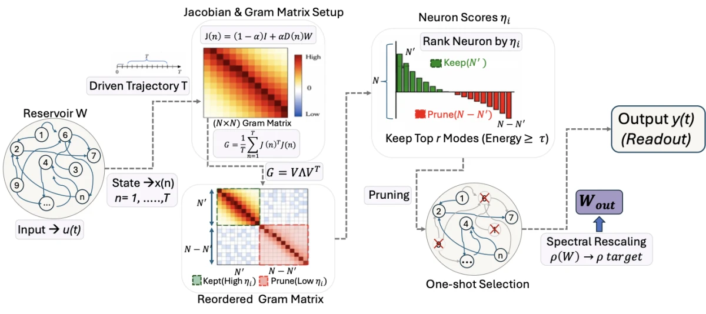

Rethinking Reservoir Pruning: A Dynamical Perspective for Echo State Networks
A research paper on making echo state networks smaller without breaking them. Instead of ranking reservoir neurons by weight size or by graph statistics, the method looks at the dynamics the reservoir actually produces on its input, scores every neuron by how much of that dynamics passes through it, and removes the rest in one shot.
Keywords

1. Introduction
An echo state network is a large reservoir of fixed, randomly connected neurons with a single trained readout. The reservoir is usually far bigger than the task needs, and most of its neurons contribute little, but existing pruning rules decide which ones to drop from static properties such as weight magnitude or connectivity. Those properties say nothing about what the reservoir does once an input drives it. This paper takes the dynamical view: drive the reservoir along a trajectory, form the Jacobian at each step, and build a Gram matrix over the trajectory. Its leading modes are the directions in which the reservoir's state actually moves. Each neuron gets a score from how much it participates in those modes, the top N′ neurons are kept in a single pass, the pruned reservoir's spectral radius is rescaled back to its target, and only the readout is retrained.
2. Goal
Goal
- Score reservoir neurons by their role in the reservoir's dynamics on real inputs rather than by weight size or graph statistics.
- Prune in one shot, with no iterative retraining of the reservoir, and keep the echo state property through spectral rescaling.
- Show how far a reservoir can be shrunk before readout accuracy drops, against the usual magnitude-based baselines.
3. Code and details on GitHub
The main project and its technical details are uploaded to GitHub, so please refer to the repository to understand the work in detail.
Rethinking Reservoir Pruning: A Dynamical Perspective for Echo State Networks
Echo State Network를 망가뜨리지 않고 작게 만드는 연구 논문이에요. Reservoir 뉴런을 가중치 크기나 그래프 통계로 순위 매기는 대신, Reservoir가 입력에 대해 실제로 만들어 내는 동역학을 보고, 그 동역학이 각 뉴런을 얼마나 지나가는지로 점수를 매기고, 나머지를 한 번에 잘라내요.
키워드
1. 소개
Echo State Network는 고정된 무작위 연결 뉴런의 큰 Reservoir에 학습된 Readout 하나가 있는 구조예요. Reservoir는 보통 과제에 필요한 것보다 훨씬 크고 뉴런 대부분은 기여가 작아요. 그런데 기존 Pruning 규칙은 가중치 크기나 연결성 같은 정적인 성질로 무엇을 뺄지 정해요. 그 성질은 입력이 Reservoir를 구동했을 때 Reservoir가 무엇을 하는지는 말해 주지 않아요. 이 논문은 동역학의 관점을 취해요. Reservoir를 궤적을 따라 구동하고, 단계마다 Jacobian을 만들고, 궤적 전체에 대한 Gram 행렬을 만들어요. 그 주요 모드가 Reservoir의 상태가 실제로 움직이는 방향이에요. 뉴런마다 그 모드에 얼마나 참여하는지로 점수를 받고, 상위 N′개를 한 번에 남기고, 잘라낸 Reservoir의 Spectral Radius를 목표값으로 다시 맞추고, Readout만 다시 학습해요.
2. 목표
목표
- 가중치 크기나 그래프 통계가 아니라, 실제 입력에 대한 Reservoir 동역학에서의 역할로 뉴런에 점수를 매겨요.
- Reservoir를 반복 재학습하지 않고 한 번에 Pruning 하고, Spectral Rescaling으로 Echo State 성질을 지켜요.
- Readout 정확도가 떨어지기 전까지 Reservoir를 얼마나 줄일 수 있는지, 흔한 가중치 크기 기준과 비교해서 보여 줘요.
3. 코드와 자세한 내용은 GitHub에
메인 프로젝트와 기술적인 세부 내용은 GitHub에 올려 두었어요. 작업을 자세히 이해하시려면 저장소를 참고해 주세요.